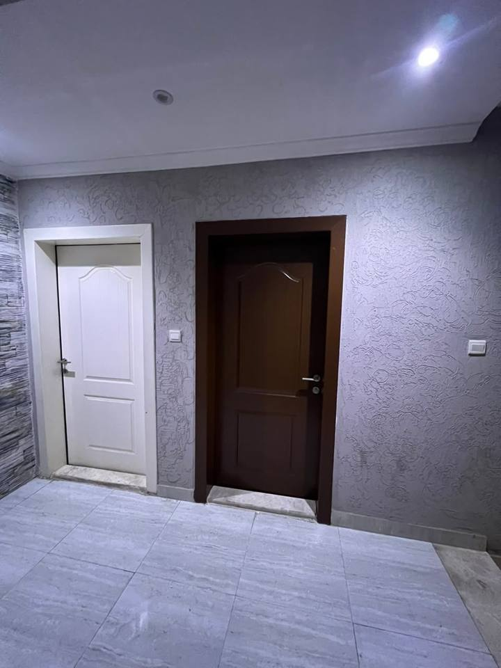
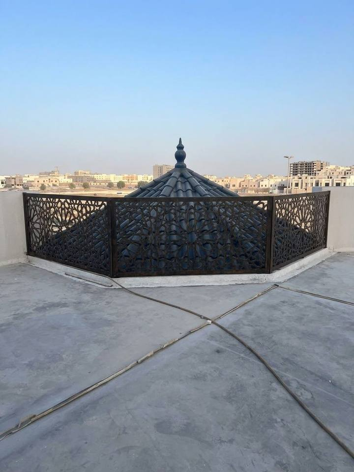
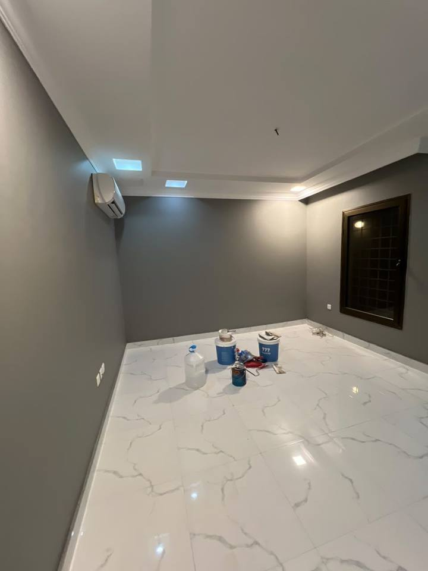

Our services in Dammam
Every one of our services is available in Dammam with a written quote and guarantee. These are documented examples of our work inside the city:
Dammam, the Eastern Province capital, is our largest area of work: from Al-Shati and Al-Fakhiriyah villas right on the sea — where humidity and salt test any paint — to the fast-growing new districts of King Fahd Suburb and Al-Fursan, where new-build finishing dominates. We treat coastal-district walls with a special preparation plan against condensation and salt, and finish new builds with Saveto putty and precise flatness checks.

Every one of our services is available in Dammam with a written quote and guarantee. These are documented examples of our work inside the city:
Jotun & Al Jazeera paints with Saveto putty and coastal humidity treatment.
Learn more ←German 18mm chipboard, WPC slats, marble substitute and LED mirrors.
Learn more ←Turnkey villa renovation, annexes, bathrooms and roof insulation — 10-year guarantee.
Learn more ←Mada/Knauf gypsum ceilings, magnetic lighting, 3D wallpaper and foam frames.
Learn more ←Korean PVC 1100g car shades, laser-cut screens and insulated qarmid — 10-year guarantee.
Learn more ←Full exterior villa facade renovation featuring UV-resistant artificial wall grass cladding and warm architectural LED lighting in Dammam.

Bespoke reception entryway combining textured chipboard panels, fluted WPC wood slats, and a warm backlit oval mirror.

Washable Jotun velvet-grey wall finishes paired with smooth spray-painted crisp white interior doors.

Washable Korean and German 3D geometric wallpaper installed with invisible seams and moisture-proof adhesive.

CNC laser-cut heavy-gauge steel privacy screens and rooftop fencing coated with anti-rust metallic paint.

Full villa rooftop elastomeric waterproof and UV-reflective thermal coating system applied with seamless joint sealing in Dammam.

Quarter-sheen off-white interior painting designed to maximize natural brightness and stain resistance across residential apartments.

Neoclassical white polyurethane foam wall molding frames installed over a refined matte grey backdrop.

Custom arched side walkway canopy fabricated from 1100gsm Korean PVC membrane providing 100% UV and rain protection.
Every photo on this site is from a real project in the Eastern Province — 68 projects across 6 cities.
A written engineering guarantee on workmanship — and 10 years on car shades, screens and roof insulation.
Jotun Fenomastic, Al Jazeera paints, Saveto putty, Mada/Knauf gypsum and German 18mm chipboard.
Salt, humidity and condensation treatment is part of our preparation protocol — not an afterthought.
Yes — inspection anywhere in our coverage cities and towns is free, and you then receive a written, itemised quote with materials, items and duration — with no obligation.
Dammam, Khobar, Dhahran, Qatif, Jubail and Al-Ahsa, plus Saihat, Safwa, Ras Tanura and Anak — each with its own page on this site.
Yes — a written guarantee on workmanship, reaching 10 years on car shades, screens and roof insulation.
Call 0530320587, use the price calculator on this site to send a ready-made request on WhatsApp, or message us directly on WhatsApp.
Pick the service and city, add a few details — your request opens in WhatsApp ready to send. Final price is confirmed after the free inspection.